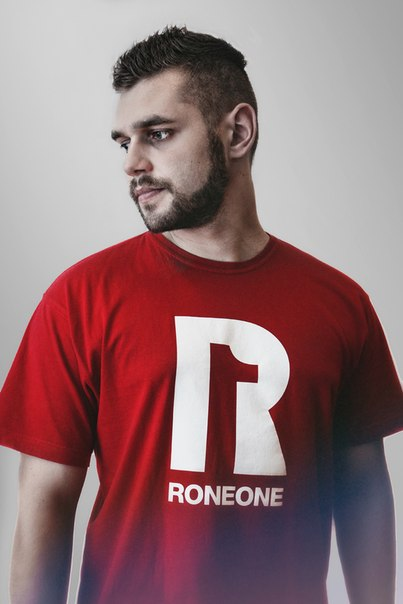

Художник - Вадим Богдан (Rone One)
Студент 5 курса кафедры живописи Белоруской Государственной Академии искусств.
Родился в 1990 году в г. Барань. На данный момент учится и проживает в г. Минске. в 1999 году поступил в художественную школу №3 города Орша, которую успешно окончил в 2005 году.
В 2007 году поступил в ГУО гимназию-колледж искусств имени И.О. Ахремчика и окончил его в 2010 году. В этом же году поступил в Белорусскую государственную академию искусств г. Минск на кафедру живописи.
Принимал участие в выставках:
- 2014 год. Участник Art-session в Витебске (номинация стрит-арт);
- 2012 год. Участник Республиканской выставки по живописи;
- 2012 год. Принимал участие в выставке Белоруской Государственной Академии искусств (БГАИ) «Пламенные сердца» посвященная памяти кубинского поэта-революционера Хосе Марти.